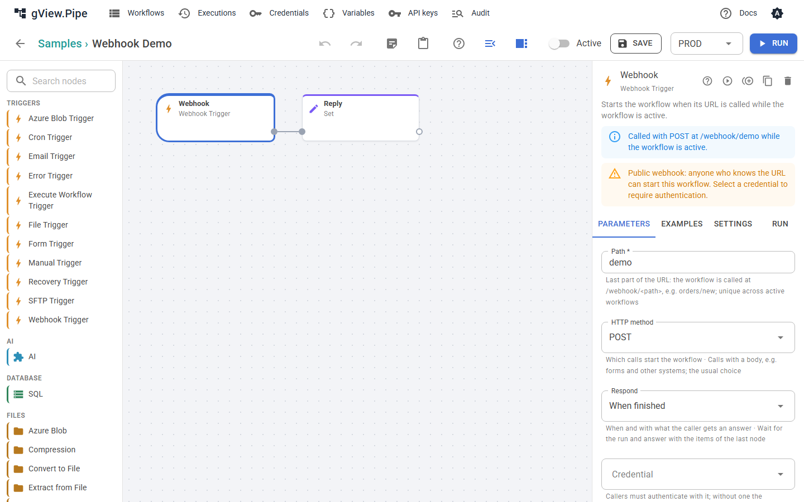

Triggers and webhooks¶
A trigger is the first node of a workflow. It decides when the workflow starts.
| Trigger | Starts the workflow |
|---|---|
| Manual Trigger | When you run it in the editor. |
| Cron Trigger | On a schedule (5 or 6 field cron expression), while the workflow is active. |
| Email Trigger | When unread mails are in a mailbox (IMAP), while the workflow is active (see below). |
| File Trigger | When new files appear in a folder, while the workflow is active (see below). |
| Azure Blob Trigger | When blobs appear in a container of Azure Blob Storage, while the workflow is active (plugin gView.Pipe.Plugins.AzureStorage, see below). |
| SFTP Trigger | When files appear in a folder on an SFTP server, while the workflow is active (plugin gView.Pipe.Plugins.Sftp, see below). |
| Webhook Trigger | When its URL is called, while the workflow is active. |
| Execute Workflow Trigger | When another workflow calls this one with the Execute Workflow node. |
| Error Trigger | When a run of another workflow fails (see Error handling). |
Webhook Trigger¶
A Webhook Trigger makes the workflow callable at
<server address>/webhook/<path>
The editor shows the exact URL as a hint next to the parameters.

| Parameter | Meaning |
|---|---|
| Path | Letters, digits, _, - and /, lower case. Must be unique across all active workflows. A random path is suggested for a new node. |
| HTTP method | POST by default, or GET, PUT, PATCH, DELETE, or any method. |
| Respond | When and how the caller gets an answer (see below). |
| Wait timeout (seconds) | How long the caller waits in the modes that wait. After that the caller gets 202 and the run goes on. |
| Credential | Basic Auth, Bearer Token or API Key Header. Without one, anyone who knows the URL can start the workflow. |
Warning
A webhook without a credential is public. The editor warns you about it.
The request as an item¶
The trigger turns the call into one item:
{
"method": "POST",
"path": "orders/new",
"query": { "id": "7" },
"headers": { "content-type": "application/json" },
"body": { "customer": "ACME" },
"receivedAt": "2026-11-01T10:15:00.0000000+00:00"
}
- A JSON body (
Content-Typecontainsjson) becomes an object inbody. Form fields become an object. Any other body is text. - Uploaded files become binary attachments of the item.
- The headers
authorization,proxy-authorization,cookieand the API key header are removed, so secrets never end up in the execution history. - Bodies larger than 10 MB are rejected with
413.
Answering the caller¶
The Respond parameter decides what the caller receives.
| Mode | The caller gets |
|---|---|
| Immediately | 202 with { "executionId": …, "status": "started" } straight away. The workflow runs in the background. Whether it succeeds is not reported to the caller. |
| When finished | The items of the node that finished last: one item as an object, several as an array. If the run fails, the caller gets 500. |
| Using respond node | The answer of a Respond to Webhook node in the workflow. |
In both waiting modes the caller gets 202 with "status": "running" when the run takes longer than the timeout. The run is never canceled when the caller disconnects.
When the workflow is busy and has a queue (Max queued runs in the workflow panel), the run waits for a free slot. Immediately then answers "status": "queued". In the waiting modes the time in the queue counts against the timeout: if the run still waits when it passes, the caller gets 503 with Retry-After and the run leaves the queue.
Respond to Webhook¶
The Respond to Webhook node sends the answer in the mode Using respond node. It lets you choose the status code, headers and body:
| Parameter | Meaning |
|---|---|
| Respond with | The first item, all items as an array, a custom body or no body. |
| Body | For custom body: JSON or an expression, evaluated against the first item. |
| Status code | 100 to 599. Supports expressions. |
| Headers | Optional response headers. A text body with a non-JSON Content-Type (for example text/html) is sent as is. |
The items pass through the node, so the workflow can continue after it has answered.
Important
The answer only exists if a Respond to Webhook node runs. When a node before it fails with the error mode Stop the execution, the run ends there, the Respond node never runs, and the caller gets 500 with the error message. To answer in a failure case too, see Answering a webhook after a failure.
Status codes¶
| Code | Reason |
|---|---|
| 200 | Answer of the workflow (When finished) or of a Respond to Webhook node. |
| 202 | Started or queued (Immediately), or the timeout passed while the run goes on. |
| 400 | The header X-Pipe-Environment names an environment the workflow doesn't allow. |
| 401 | The credential is missing or wrong. |
| 404 | No active webhook at this path. |
| 405 | The method does not match the trigger. |
| 413 | The body is too large. |
| 429 | The workflow is already running, its limit of concurrent runs is reached (default 1) and its queue is full or off. |
| 503 | The run still waited in the queue when the timeout passed; it was taken out of the queue. Try again after Retry-After seconds. |
| 500 | The run failed, or ended without reaching a Respond to Webhook node. The body contains the error and the execution id. |
The 500 body looks like { "error": "…", "executionId": "…" }. Look the execution id up in the execution history to see which node failed.
Choosing the environment¶
A webhook run uses the effective environment of the workflow (see Variables and environments). To let callers choose another one, for example to test a system against the test database, list it under Webhook callers may choose in the workflow panel. The caller then sends the header:
X-Pipe-Environment: TEST
An environment that isn't listed is rejected with 400, never silently replaced. The header is checked after the credential, so a caller without access learns nothing about the environments.
Try it¶
curl -i -X POST http://localhost:5240/webhook/demo -H "Content-Type: application/json" -d '{"name":"Ada"}'
In Windows PowerShell, Invoke-RestMethod hides the body of an error answer. Use curl.exe -i (with -k for the development certificate on https://localhost:7240) to see the status code and the body.
File Trigger¶
Starts the workflow when new files appear in a folder. The folder is one that the host released with Pipe:FileRoots, the same as for Read File and Write File; you name it and, if you like, a subfolder.
The trigger looks at the folder every Check every seconds (10 by default). A file is reported when its size and time were the same in two checks in a row and no other program still writes to it, so a file that is being copied is not picked up half done. That takes up to two intervals.
Each check that finds new files starts one run with one item per file (at most 100 per run; the rest follows with the next check):
| Field | Content |
|---|---|
folder |
the name of the released folder |
path |
the path of the file relative to that folder, with / |
name |
the file name |
size |
the size in bytes |
modified |
the time of the last change (ISO 8601, UTC) |
event |
created, or changed |
The items hold no content. Read File reads it: use {{ $json.path }} as its Path and the same folder.
- Which files: File pattern (
*.csv) and Include subfolders. Events is Created (default) or Created or changed. - Files that are already there when the workflow is activated, or when the app starts, are not reported. The trigger keeps nothing on disk; after a restart it knows only what is in the folder then. A file that disappears and comes back is new.
- Move or delete the file at the end of the workflow (Write File), if it must not be seen again.
- If the workflow is busy and its queue is full (Error handling), the files wait and are offered with the next check. If the folder can't be read, the trigger waits for it and writes one warning to the log.
- A file that keeps changing, or stays open for another program, is not reported; the log says so after 30 checks.
Email Trigger¶
Starts the workflow when there are unread mails in a mailbox (IMAP). Create an IMAP Server credential first: host, port (993), security (SSL on connect, StartTLS or none for local test servers), user name and password. The certificate of the server is always checked. Providers that allow only OAuth2 sign-in are not supported yet; use an app password where the provider offers one. The password can come from a secret source.
The trigger connects every Check every (seconds) (60 by default, at least 10) and takes the unread mails of Folder (INBOX), oldest first. From contains and Subject contains narrow them down on the server; other mails are not touched. Mails that are already unread when you activate the workflow count: they are work that was not done.
Each check that finds mails starts one run with one item per mail (at most 50; the rest follows with the next check):
| Field | Content |
|---|---|
messageId, uid, folder |
where the mail comes from |
from |
name and address of the sender |
to, cc |
lists of name and address |
subject, date |
subject and time (ISO 8601) |
text, html |
the two bodies, if the mail has them |
attachments |
the names of the attachments |
tooLarge |
true if the mail was larger than Max message size (MB) (25): then only the header fields are filled |
With Download attachments (on by default) each attachment is a binary attachment of the item: attachment1, attachment2, … in the order of attachments. Inline images are left out. Write File or Send Email can use them.
After the run has started, the mails are handled as After processing says: Mark as read (default), Move to folder (the Target folder is created if it is missing) or Delete. Mails are handled when the run starts, not when it succeeds, so a failing run doesn't start again at every check; the error workflow tells you about the failure. If the workflow is busy and its queue is full, the mails stay unread and come with the next check. If they can't be marked or moved, the log says so and this trigger doesn't start them a second time.
The trigger keeps nothing on disk: the mailbox holds the state, so a restart sees the same unread mails. Use one instance per mailbox; two could pick the same mail.
SFTP Trigger¶
Starts the workflow when files appear in a folder on an SFTP server (plugin gView.Pipe.Plugins.Sftp). It uses an SFTP Server credential like the SFTP node, including the check of the host key fingerprint.
The trigger connects every Check every (seconds) (60 by default, at least 10) and lists Path. File pattern (*.csv, capitals don't matter) and Include subfolders narrow it down. Folders and names ending in .part or .tmp are never reported: uploaders often write under such a name and rename when they are done. A file is reported when its size and time were the same in two checks in a row, so it comes after up to two intervals.
Each check that finds complete files starts one run with one item per file (at most 100; the rest follows with the next check). The item is the one the List operation of the SFTP node gives (fileName, path, size, modifiedAt, isDirectory) plus event (created or changed). The SFTP node with Download and {{ $json.path }} as Path fetches the content.
After processing decides what happens to a file once the run has started, and with it what counts as new:
- Move to folder (default; Target folder is required and created if missing) and Delete: every file in the folder counts, also those that were there before. The server holds the state, so a restart loses nothing. A name that is taken in the target gets
_2,_3, … before its extension. The account needs write permission. - Nothing: the files of the first check are the baseline and trigger nothing; only files that are new afterwards are reported, with Events = Created or changed also changed ones. The trigger keeps nothing on disk, so files that arrive while the app is down are part of the baseline after a restart. Use this for read-only accounts.
Files are handled when the run starts, not when it succeeds, so a failing run doesn't start again at every check; the error workflow tells you about the failure. If the workflow is busy and its queue is full, the files stay and are offered with the next check. If a file can't be moved or deleted, the log says so and this trigger doesn't start it a second time. A server that can't be reached, or a host key that doesn't match, is logged, and the next check tries again. Use one instance per server folder; two could pick the same file.
Azure Blob Trigger¶
Starts the workflow when blobs appear in a container of Azure Blob Storage (plugin gView.Pipe.Plugins.AzureStorage). It uses an Azure Storage credential like the Azure Blob node and works like the SFTP Trigger, with two differences:
- A blob is reported at the first check that sees it, because a blob is visible only when it is complete. There is no
.partrule. - Move to folder can move into another container: Target container (empty: the same; created if it is missing) and Target folder.
It checks Container and the folder Path every Check every (seconds) (60 by default, at least 10), with File pattern and Include subfolders. One run per check with one item per blob (at most 100): the item of the node's List plus event. After processing is Move to folder (default), Delete or Nothing, with the same meaning as for the SFTP Trigger: Move and Delete take every blob, also older ones, and the storage holds the state; Nothing reports only blobs that are new after the first check. Moving copies the blob on the server and then deletes it.